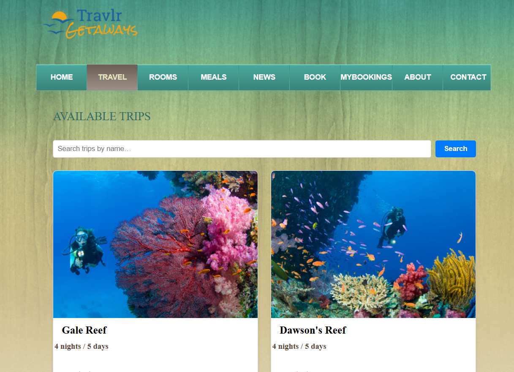

Algorithms and Data Structures
The artifact I selected is the Travlr Getaways web application. I originally developed this in CS 465 Full Stack Development. The application uses a hybrid approach which combines server rendered views with Express and Handlebars, and a Single Page Application (SPA) for administrative use built with Angular. This version focused on enhancements to trip searching and adding UI to the frontend.
I selected this artifact because it clearly demonstrates my ability to integrate and apply foundational concepts in data structures and API-driven algorithms. It showcases how I handle asynchronous data fetching, manage application state, and transform structured data from a backend service into a meaningful frontend display. These are key skills in full-stack development and align with industry expectations for modern web applications.
The key component is the efficient retrieval and rendering of trip data. On the backend, the API structures the data using JSON and accesses it via MongoDB. On the frontend, useEffect and axios are used to retrieve the data, which is stored in a useState array and dynamically mapped into structured UI components.
The enhancement involved refactoring the trip-fetching logic to use best practices in state management and modular component design. Additionally, I ensured that the algorithm used to loop through trips (map) handles sorting and display formatting in a way that is both performant and user-friendly.
I did meet the course outcomes that I had planned for with these enhancements. These enhancements met Outcome 3: Designing and evaluating computing solutions using algorithmic principles and Outcome 4: Demonstrating the use of innovative tools and techniques to deliver value. These enhancements helped reinforce those outcomes by requiring a thoughtful design of frontend data mapping and backend efficiency.
The enhancement process taught me how subtle inefficiencies in data flow can impact user experience and maintainability. I deepened my understanding of how React state interacts with backend API responses and how to optimize data transformations on the client side. A key challenge I faced was debugging inconsistent behavior caused by caching stale frontend builds, this was a challenge that helped me become more comfortable with build tooling and deployment practices. Additionally, integrating the backend with MongoDB required careful structuring of schemas and consistent data formatting, which improved my confidence in full-stack data handling. Overall, the enhancements made helped me develop my skills working in the backend and integrating those updates into the frontend.
This is my artifact before I made my enhancements. https://github.com/Criswell-D/TravlrOriginal .
This is my artifact after I made my enhancements. https://github.com/Criswell-D/Travlr_v2 .